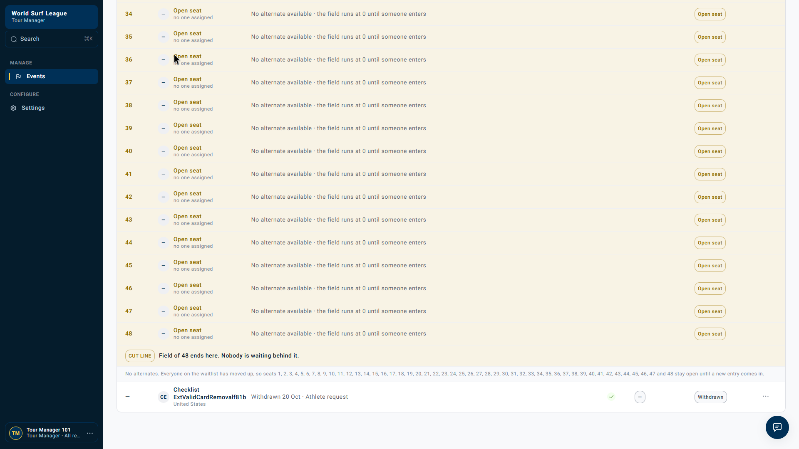
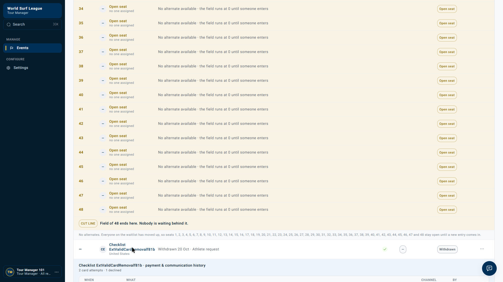

Tour Manager · Payments · Withdrawal and retry
Backend accepts a retry after withdrawal following a valid-card change
Live dev test · 20 October 2026, 22:18 Africa/Cairo · Stripe test mode
Draft bug report Suggested priority: High No Jira ticket created
Post-withdrawal retry acceptance reproduced. After a declined payment, the athlete selected a valid test Visa and the Tour Manager withdrew the entry. A subsequent manual retry request still returned HTTP 200. History then recorded a successful payment above the withdrawal, while the athlete remained Withdrawn.
What is confirmed — and what still needs tracing
Confirmed: the backend accepted the post-withdrawal retry, and a payment success is recorded after withdrawal in application history.
Not established: whether that successful payment came from the automatic retry triggered by changing the card or the later manual retry. Provider initiation/completion timestamps were not captured. This is not evidence of two successful charges or proof that Stripe started charging after removal.
Recorded evidence review
Read-only review recorded after the API test: the real event roster and expanded payment history. This is not a replay of the decline, card change or removal actions. The timestamped API evidence below documents those actions.
Final roster — Withdrawn


The roster no longer displays the payment status for this withdrawn athlete.
History — success above withdrawal


The history is newest first. It shows the recorded application order, not exact processor timing.
Reproduction steps
- Create an isolated dev event and enter an eligible QA athlete with a decline-after-attach Stripe test card.
- Close entries, save the seed order and run Confirm & charge. Verify Declined / Pending.
- As the athlete, change this entry to a valid saved test Visa. The card-change endpoint returns HTTP 202 and can trigger an immediate retry.
- As Tour Manager, withdraw the athlete.
- Send a fresh direct
POST /api/tour-manager/events/{eventId}/entries/{entryId}/actionswith{"code":"retry"}. - Inspect the HTTP response, roster and payment history.
Expected: reject a new retry for a withdrawn entry, and reconcile any attempt already in progress.
Actual: HTTP 200 accepts the retry; the final history includes success while the athlete is Withdrawn.
Exact action timeline
Times below are response-observation times in Africa/Cairo on 20 October 2026. They are not Stripe charge timestamps.
| Time | Action | HTTP |
|---|---|---|
| 22:18:30.478 | Initial Confirm and charge | 200 |
| 22:18:33.897 | Change entry to valid saved Visa | 202 |
| 22:18:35.260 | Remove athlete after valid-card change | 200 |
| 22:18:35.762 | Manual retry after removal with valid card selected | 200 |
The pre-removal roster at 22:18:34.645 still showed Pending / Declined and chargesInFlight: false. The withdrawal response arrived at 22:18:35.260; the later retry response at 22:18:35.762.
Observed history
Newest first; the UI time is rounded to the minute.
| What | When (UTC) | Actor | Channel |
|---|---|---|---|
| Card payment succeeded | 20 Oct 19:18 UTC | System | Stripe |
| Entry withdrawn · was #1 · Athlete request | 20 Oct 19:18 UTC | T. Manager 101 | Tour Manager |
| Card payment declined (generic_decline) | 20 Oct 19:18 UTC | System | Stripe |
| Card payment charge started | 20 Oct 19:18 UTC | T. Manager 101 | Stripe |
| Seed · to #1 | 20 Oct 19:18 UTC | T. Manager 101 | Tour Manager |
Download captured history · Download full action and snapshot evidence · Download descriptive bug report
Impact
A stale client or direct API request can initiate retry processing for an athlete who no longer holds a place. A valid-card update and withdrawal can overlap, leaving a successful payment recorded against a withdrawn entry. Staff may need to reconcile the payment or refund it according to policy. The roster hides the payment status, although history records the success.
No real funds were used, no duplicate successful payment was established, and no automatic refund was tested.
Technical findings
competition/application/entries.py:retry_payment_preparechecks for a failed charge but does not reject terminal entry statuses.competition/infrastructure/persistence/repositories/events/entries.py:withdraw_entrycancels open charges;OPEN_CHARGE_STATUSESomitsFAILED.- The BFF action endpoint can accept a direct retry even though the withdrawn row offers no UI actions.
payment/domain/deferred_charges.pytriggers an immediate retry when an explicit card change fixesNEEDS_NEW_METHODorRETRYABLE.- Payment release refuses
CHARGING; cancellation of an already-running attempt needs reconciliation.
These are local-source findings consistent with the observed behavior. The deployed source revision and exact successful execute request were not verified.
Acceptance criteria
- Reject new manual retry requests for withdrawn/terminal entries and enforce this atomically when claiming a charge.
- Remove remaining failed and scheduled retry eligibility on withdrawal.
- Handle release failures and reconcile attempts already executing, including late success.
- Expose payment outcomes requiring Finance action for withdrawn athletes.
- Test valid-card updates racing with withdrawal, queued/in-flight retries, stale requests and duplicate-delivery protection.
Fixture and limits
Event: 01a15ac0-27f5-7371-aa14-100478c529fa
Entry: 01a15ac0-347a-73ba-8faf-89658f5fdbc9
Athlete: 01a15abf-090b-70da-89c7-a8b3c5895247
No database values or shared payment rules were changed. No alternate was promoted and no automatic scheduled due-time test was run. No refund was initiated. Resolve attribution by correlating execute/release messages, the payment deferred-charge record and Stripe PaymentIntent timestamps.